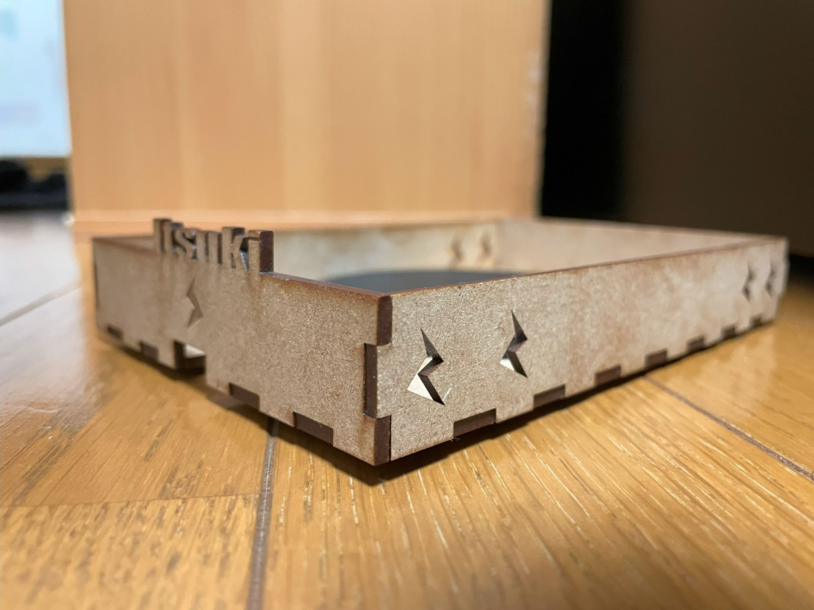

家にあるワイヤレス充電器の充電判定がシビアでいつもストレスでした。
そこで、ワイヤレス充電器にガイドをつけることでこの不満を解消しようと考えました。

ファイルをファブラボにおいてきました。見つけ次第更新します。
家にあったワイヤレス充電器がぴったり底にハマるよう穴を開け、コードが引っかからないよう側面にも小さな穴を開けています。
一見デザインとしてついている電気のマークですが、排熱用の穴としての役割を持ち、有効活用できています。
また、ワイヤレス充電器を使う理由として、「簡単に充電するため」というのが一番にあげられますが、そのメリットをさらに伸ばすことが出来る一品になっているので人の心を動かすことが出来ると思います。